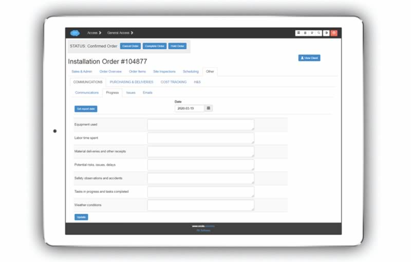

The system incorporates powerful tools for handling all types of project communications in a highly organised manner.
The main communication types by default are:
Client communication
Supplier communication
QA communication
Request for information
Phone conversation
Team meeting
Note
These types may be changed.
This tab displays all communication that you are a primary party in, listed by most recent. There is powerful querying built in to filter the list in the way you need, or find a particular communication.
This tab is similar to the above except that it displays company wide communication.
Each installation order / estimate has its own ‘Communications’ tab holding all related communications.
Click on the ‘Search Communications’ button and search by any field.
Click the ‘Track’ button to capture any communication.
Fill out the required fields as below.
After initial capture, detail can be added to the communication, or edited. This includes:
Date
Subject
Content
Other interested parties (attending)
Other interested parties (non-attending)
Document attachments
If a communication is ‘threaded’ (like in an email exchange), you can navigate the thread using the left hand column.
Click the ‘EDIT’ button to edit these fields.
Click the ‘Attending’ or ‘Non-Attending’ buttons, enter the first two or more characters of the required name in each form field, and click ‘Add Person(s)’.
Click ‘Add’, choose the file from your device, enter a description, and click the ‘Submit’ button.
Record and view progress on this screen.
The progress report headings by default are:
Equipment used
Labor time spent
Material deliveries and other receipts
Potential risks, issues, delays
Safety observations and accidents
Tasks in progress and tasks completed
Weather conditions
Note
These headings may be changed to suit your requirements.
Choose the date required, fill out the fields, and click update. You may also edit/update previous reports.
Currently, choose a date to see the required progress report.
All open issues for ongoing projects are displayed on the main dashboard.
Currently, issue types pertain to factory / production.
Open issues are displayed on the main dashboard.
Search issues by entering criteria into the search fields and clicking ‘Find’.
Issue detail screen:
|
|
The system “polls” any Email Inbox folder and Sent folder at set times to identify new emails sent or received, and it matches them with information stored on the database.
It looks at all of the email addresses and finds the corresponding contacts on the system.
It looks in the subject line or the first few lines of the body text for the estimate/order number that ‘matches’ the email with that order.
To have an email picked up by the system, it must include the estimate/order number in the subject or first few lines of the body text preceded by letters ‘ON#’.
E.g. ON#104877
You can click through an email to view it in exactly the same way as you do another type of communication. -RONAN FIX THIS :ref:: Viewing Communication Content
This dashboard tab lists emails that you have sent, received, or been cc’d on.
This dashboard tab lists emails in every mailbox that is scanned by the system, that have had an order/estimate reference number written in it.